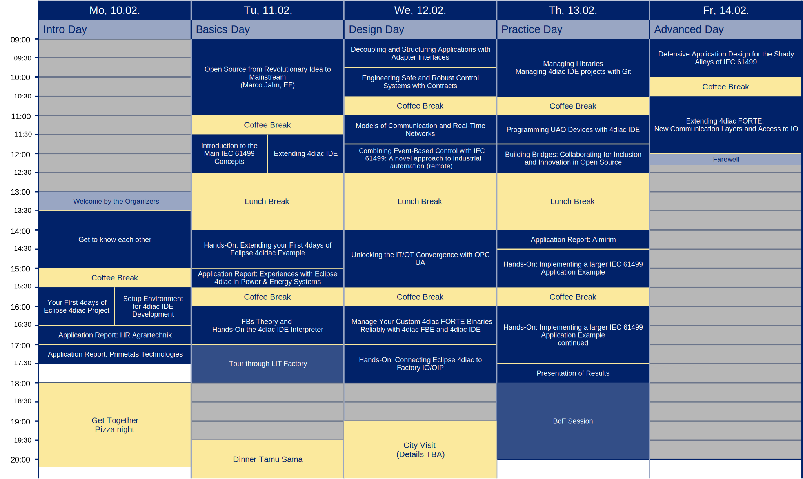

Program Overview
Detailed Program
Legend
- Breaks and Social Events
- Lecture
- Interactive Session
- Keynote
- Industry Report
| Session Name | Presenter Name | Organization | Scheduled Time |
|---|---|---|---|
| Welcome by the Organizers | 4days of Eclipse 4diac Team | 13:00-13:30 | |
| Get to Know Each Other | 4days of Eclipse 4diac Team | 13:30-15:00 | |
| Coffee Break | 15:00-15:30 | ||
| Your First 4days of Eclipse 4diac Project | Lisa Sonnleithner | LIT CPS Lab, JKU | 15:30-16:30 |
| Setup Environment for 4diac IDE Developments | Bianca Wiesmayr | LIT CPS Lab, JKU | 15:30-16:30 |
| Applications Report: HR Agrartechnik | Franz Höpfinger | HR Agrartechnik GmbH | 16:30-17:00 |
| Applications Report: Primetals Technologies | Benjamin Muttenthaler / Ernst Blecha | Primetals Technologies Austria GmbH | 17:00-17:30 |
| Get Together: Pizza Night | 4days of Eclipse 4diac Team | 18:00-21:30 |
| Session Name | Presenter Name | Organization | Scheduled Time |
|---|---|---|---|
| Open Source: From Revolutionary Idea to Mainstream | Marco Jahn | Eclipse Foundation | 09:00-11:00 |
| Coffee Break | 11:00-11:30 | ||
| Introduction to the Main IEC 61499 Concepts | Lisa Sonnleithner | LIT CPS Lab, JKU | 11:30-12:30 |
| Extending 4diac IDE | Bianca Wiesmayr | LIT CPS Lab, JKU | 11:30-12:30 |
| Lunch Break | 12:30-14:00 | ||
| Hands-On: Extending your First 4days of Eclipse 4diac Example | Lisa Sonnleithner | LIT CPS Lab, JKU | 14:00-15:00 |
| Application Report: Experiences with Eclipse 4diac in Power & Energy Systems | Thomas Strasser | AIT | 15:00-15:30 |
| Coffee Break | 15:30-16:00 | ||
| FBs Theory and Hands-on with the 4diac IDE Interpreter | Bianca Wiesmayr | LIT CPS Lab, JKU | 16:00-17:00 |
| Tour through LIT Factory | Klaus Straka | LIT Factory, JKU | 17:00-18:00 |
| Session Name | Presenter Name | Organization | Scheduled Time |
|---|---|---|---|
| Decoupling and Structuring Applications with Adapter Interfaces | Alois Zoitl | LIT CPS Lab, JKU | 09:00-09:45 |
| Engineering Safe and Robust Control Systems with Contracts | Jörg Walter | OFFIS e. V., Oldenburg | 09:45-10:30 |
| Coffee Break | 10:30-11:00 | ||
| Models of Communication and Real-Time Networks | Friederike Bruns | Carl von Ossietzky Universität Oldenburg | 11:00-11:45 |
| Combining Event-Based Control with IEC 61499: A novel approach to industrial automation (remote) | Oscar Miguel Escrig | Universidad Jaume I | 11:45-12:30 |
| Lunch Break | 12:30-14:00 | ||
| Unlocking the IT/OT Convergence with OPC UA | Mainak Majumder | LIT CPS Lab, JKU | 14:00-15:30 |
| Coffee Break | 15:30-16:00 | ||
| Manage Your Custom 4diac FORTE Binaries Reliably with 4diac FBE and 4diac IDE | Jörg Walter | OFFIS e. V., Oldenburg | 16:00-17:00 |
| Hands-On: Connecting Eclipse 4diac to Factory IO/OIP | Jörg Walter / Alois Zoitl | OFFIS e. V., Oldenburg / LIT CPS Lab, JKU | 17:00-18:00 |
| Session Name | Presenter Name | Organization | Scheduled Time |
|---|---|---|---|
| Library Management and Working with Git in 4diac IDE | Michael Oberlehner | LIT CPS Lab, JKU | 09:00-10:30 |
| Coffee Break | 10:30-11:00 | ||
| Programming UAO Devices with 4diac IDE | Pedro Ricardo Corrêa Souza | Aimirim | 11:00-11:45 |
| Building Bridges: Collaborating for Inclusion and Innovation in Open Source | Friederike Bruns | Carl von Ossietzky Universität Oldenburg | 11:45-12:30 |
| Lunch Break | 12:30-14:00 | ||
| Application Report: Aimirim | Pedro Ricardo Corrêa Souza | Aimirim | 14:00-14:30 |
| Hands-On: Implementing a larger IEC 61499 Application Example | Alois Zoitl | LIT CPS Lab, JKU | 14:30-17:30 |
| Coffee Break | 15:30-16:00 | ||
| Presentation of Results | All attendees | 17:30-18:00 | |
| BoF Sessions | All attendees | 18:00-20:00 |
| Session Name | Presenter Name | Organization | Scheduled Time |
|---|---|---|---|
| Defensive Application Design for the Shady Alleys of IEC 61499 | Jörg Walter / Alois Zoitl | OFFIS e. V., Oldenburg / LIT CPS Lab, JKU | 09:00-10:00 |
| Coffee Break | 10:00-10:30 | ||
| Extending 4diac FORTE: New Communication Layers and Access to IO | Martin Melik Merkumians | electrify smart energy GmbH | 10:30-12:00 |
| Farewell | 4days of Eclipse 4diac Team | 12:00-12:20 |
Speakers
Alois Zoitl
Alois Zoitl is the project lead of Eclipse 4diac and a committer for Eclipse GEF Classic. As a professor for Cyber-Physical Systems at Johannes Kepler University Linz, he combines academic expertise with hands-on industry experience. With over 250 publications and multiple patents, Alois has led numerous R&D projects, both industry- and publicly funded, focusing on automation, real-time systems, and distributed intelligence. He is a senior IEEE member and has been actively involved in the standardization of IEC 61499 since 2009. He has been convenor of the IEC SC65B/WG15 working group since 2015.
Benjamin Muttenthaler
Benjamin Muttenthaler joined Primetals Technologies in 2008 and has extensive experience in software development and project management for process optimization and basic automation in the steel industry. He is currently involved in the research and development of a platform-independent development environment with the goal of efficiently deploying and maintaining basic automation software across different vendor-specific platforms.
Bianca Wiesmayr
Bianca Wiesmayr is part of the project team of Eclipse 4diac. In addition to her research, she is an active software developer for the open-source development environment Eclipse 4diac. She researches model-driven methods for developing automation systems. Her dissertation investigated the use of behavior models for the implementation and maintenance of control software in the domain-specific modeling language defined in IEC 61499. Many of her results are available open source in Eclipse 4diac. Additionally, she has worked on improving the usability of the modeling editor.
Ernst Blecha
Ernst Blecha joined Primetals Technologies in 2022. He studied mechatronics at JKU, where he first gained experience with Eclipse 4diac. Since 2022, he has been working in research and development to implement a platform independent development environment, with Eclipse 4diac as a key component. Ernst’s background in mechatronics and extensive experience in control software development have been instrumental in improving the efficiency and functionality of the development environment.

Franz Höpfinger
Franz Höpfinger is a highly experienced engineer and educator. With a degree in Technical Informatics from the University of Applied Sciences in Rosenheim, Franz has dedicated his career to advancing control systems for agricultural machinery. As the owner of an engineering office, he specializes in developing innovative solutions for the industry.
Since 2010, Franz has been deeply involved with ISOBUS (ISO 11783), a key standard for communication in agricultural machinery, and, since 2022, with IEC 61499 and Eclipse 4diac, focusing on industrial automation. In addition to his professional work, he shares his expertise as a part-time teacher at the Meisterschulen am Ostbahnhof.
Friederike Bruns
Friederike Bruns (B.Sc.'16-M.Sc.'19-PhD'24) was born in Vechta, Germany. She received the bachelor and master of science degrees in computer science, as well as the PhD degree (Dr.-Ing.) from the Carl von Ossietzky University of Oldenburg, Germany, in 2016, 2019, and 2024, respectively. After receiving the M.Sc., she moved forward in her academic career by taking a position as a researcher at the University of Oldenburg in the group Embedded Hardware and Software Systems. After an Erasmus-funded three-month research and teaching stay at JKU in Linz (Austria), she had a position at OFFIS e.V. - Institute for Information Technology, in the group Distributed Computation and Communication in Research and Development Devision Manufacturing. Currently, Bruns is a post-doctoral researcher in the group Distributed Control in Interconnected Systems at the Carl-von-Ossietzky Universität Oldenburg, Germany. Dr.-Ing. Bruns is an active member to the Software Engineering for Cyber-Physical Production Systems (SECPPS) community and regularly contributes to conferences like CASE or ETFA as reviewer and session chair.
Jörg Walter
Dr.-Ing. Jörg Walter is a researcher at OFFIS -- Institute for Information Technology in Oldenburg, Germany. He manages the research group Distributed Computing and Communication in the R&D department Manufacturing at OFFIS. His group researches embedded system hard- and software in the field of industrial automation systems with a focus on hardware achitectures and design methodology to address the challenges of modern control tasks. Eclipse 4diac and IEC 61499 are ideal vehicles for this research, since they embrace both, state-of-the-art modeling capabilities and practical applicability for actual production systems.
The organisational and speaking engagement of Jörg Walter at the 4days of Eclipse 4diac are funded through the Ministry of Science and Culture of the federal state of Lower Saxony, Germany and VolkswagenStiftung as part of research project Zukunftslabor Produktion, grant agreement nr. ZN3489, coordinated by the Center for Digital Innovation Lower Saxony.
Marco Jahn
Marco Jahn is Senior Research Project Manager at the Eclipse Foundation. He obtained his diploma in computer science from Ulm University in 2006 and his PhD from RWTH Aachen in 2016. He worked as software developer at denkwerk GmbH before moving to Fraunhofer FIT where he has been working as researcher and project manager in various European research projects in the areas of IoT and Smart Cities and was leading the IoT Platforms team. He joined the Eclipse Foundation in 2019 to help turning innovations into successful open source projects.
Martin Melik Merkumians
Martin Melik Merkumians is Head of Research and Development at the electrify smart energy GmbH. He obtained his diploma in automation technology from TU Wien in 2009, and is currently finalizing his PhD thesis at TU Wien. He is a founding member and regular committer on the various Eclipse 4diac projects, focusing on runtime behavior, language editors, and compatibility to relevant IEC 61131 topics and standards. Before joining electrify smart energy GmbH he was the head of the research group for industrial automation at TU Wien's Automation and Control Institue, where he lead several public and industry-funded R&D projects in the fields of industrial automation and robotics.
Michael Oberlehner
Michael is a member of the Eclipse 4diac project team and an active developer of 4diac IDE. He holds a Master’s degree in Computer Science and is currently in the final phase of his PhD. His research focuses on library management and refactoring in IEC 61499, which has been integrated into 4diac IDE.
Prior to his PhD, Michael gained experience in industry, which gave him valuable insight into the real-world challenges in an industrial environment.
Oscar Miguel Escrig
Oscar Miguel-Escrig received the B.S. and M.S. degrees in industrial engineering from the Universitat Jaume I (UJI) de Castelló, in 2015 and 2017, respectively, the M.S. degree in automatics and electronics engineering from the Institut National des Sciences Appliquées de Toulouse (INSA), in 2017, and the Ph.D. degree in industrial technologies and materials from the UJI, in 2021. Received the Springer award to best thesis in Automatic Control Engineering 2021-2022. His research interests include among others event-based control, tuning and auto-tuning methods, and automation in IEC 61499 standard.
Pedro Ricardo Corrêa Souza
Pedro Ricardo Corrêa Souza is part of technical leadership team of Aimirim as a full-stack developer. He has a PhD in Engineering from Federal University of Uberlândia, is a specialist in numerical methods and a senior programmer.
Thomas Strasser
Thomas Strasser earned his master's, PhD, and Venia Docendi (habilitation) in automation from Technische Universität Wien (TU Wien). He has been a senior scientist at the AIT Austrian Institute of Technology’s Center for Energy for over 14 years, focusing on smart grid automation, research project development, and mentoring PhD candidates and junior scientists. Before AIT, he spent six years as a senior researcher at PROFACTOR, investigating advanced automation and control systems. Thomas Strasser is one of the co-founders of 4diac.